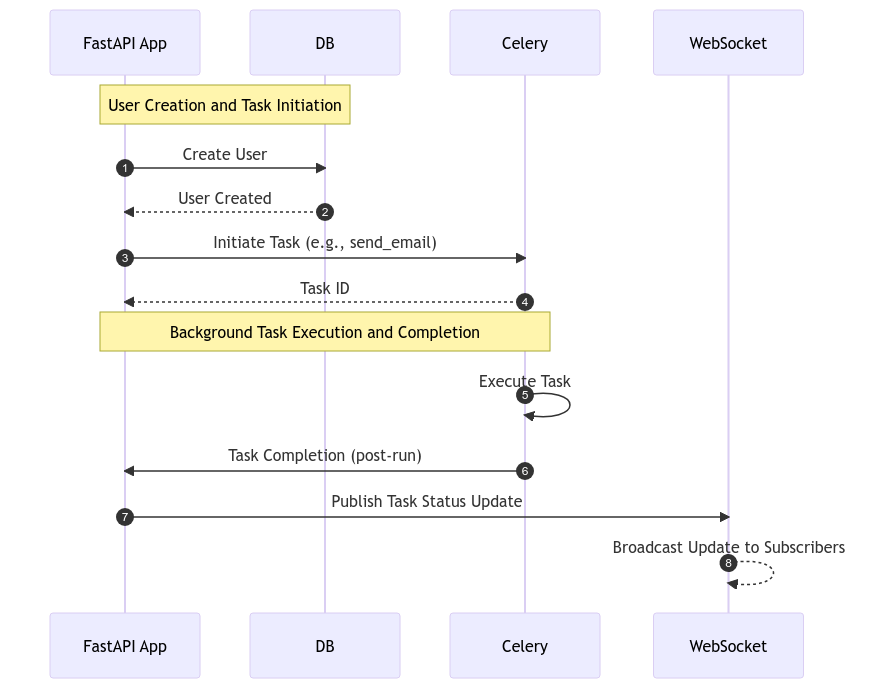
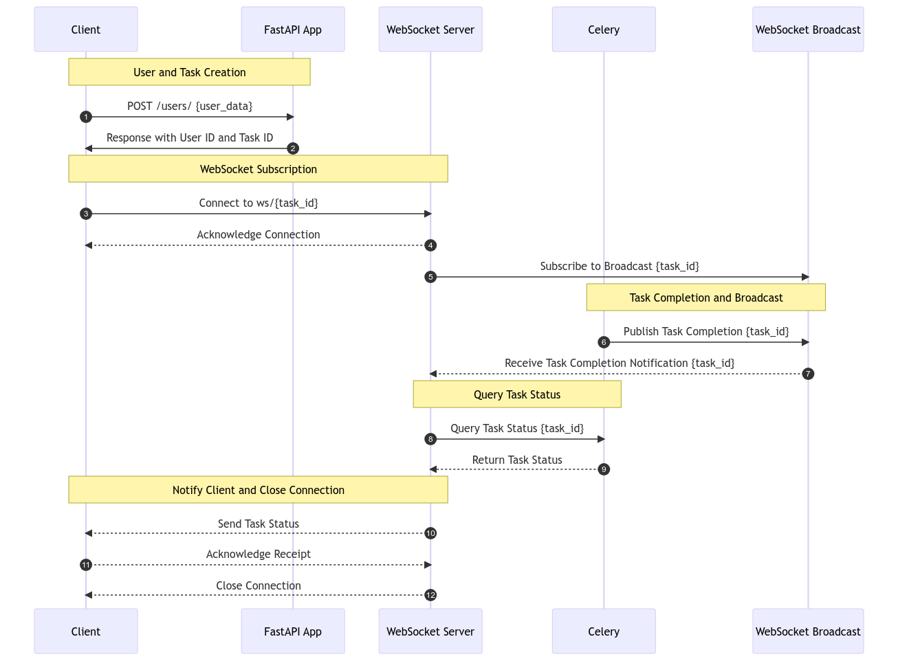

Lab 5: WebSocket With Celery¶
Overview¶
Our FastAPI application has been enhanced with a new WebSocket module, bringing real-time capabilities to our service. This update primarily revolves around providing live updates on task statuses.
How It Works¶
Background Perspective¶

In the backend, when a user is created or a task is initiated, our FastAPI app communicates with the database and Celery. Once a task is handed over to Celery, it is executed in the background. Upon completion, the task’s post-run handler updates the task status which is then broadcasted through WebSocket to any subscribed clients.
Key components involved: - FastAPI App: Handles user creation and task initiation. - Celery: Executes background tasks and notifies on completion. - WebSocket: Broadcasts real-time updates to clients.
User Perspective¶

From the user’s perspective, upon initiating a task (such as user creation or sending an email), they receive a task ID and can connect to a WebSocket endpoint to receive live updates about the task status. This connection keeps the user informed in real-time until the task is completed.
The flow involves: - Client to FastAPI App: Requesting task initiation. - FastAPI App to Client: Providing task details. - Client to WebSocket: Subscribing for updates on the task. - WebSocket Broadcast: Notifying client of task status updates.
Technical Implementation¶
WebSocket Routes¶
The WebSocket functionality is facilitated through routes defined in ws_router. Key routes include:
- /form_ws/: Displays a form for user interaction.
- /ws/task_status/{task_id}: WebSocket endpoint for receiving task status updates.
Frontend Integration¶
The user interface interacts with these WebSocket endpoints. The frontend script handles form submission and WebSocket communication, providing a seamless experience for monitoring task progress.
Testing the WebSocket Endpoint¶
Endpoint Overview¶
The WebSocket endpoint at http://localhost:8010/form_ws/ provides a user interface for submitting data and observing real-time updates about the processing status via WebSockets. This form is a part of a Celery-based task processing system.
How to Use¶
- Accessing the Endpoint:
-
Navigate to
http://localhost:8010/form_ws/in your web browser. You will see a form with fields for email, username, and password. -
Submitting the Form:
- Fill in the fields with appropriate data.
- Click the ‘Submit’ button.
-
Upon submission, the form data is sent to the server using a POST request to the
/users/endpoint. -
WebSocket Interaction:
- When the form is submitted, a WebSocket connection is established to
/ws/task_status/[task_id], where[task_id]is a unique identifier for the task generated by the server. - The page displays real-time updates about the task status (e.g., ‘Processing…’, ‘Success’, or any error messages) below the form.
-
Once the task reaches a final state (‘SUCCESS’ or ‘FAILURE’), the WebSocket connection is closed.
-
Front-End Behavior:
- The form uses Bootstrap for styling and layout.
- JavaScript is utilized to handle form submission, WebSocket communication, and updating the UI based on the task’s progress and status.